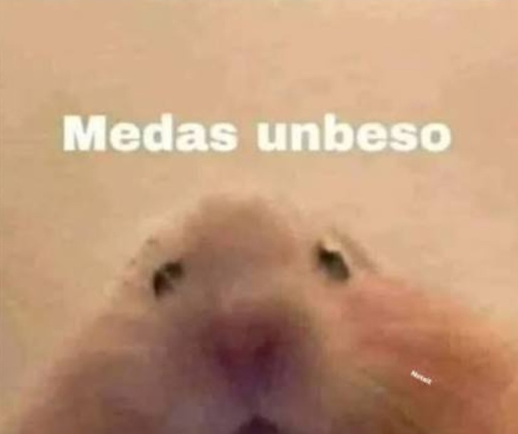

TOCÁ PARA SALTEAR
Question 1 of 1
Are you pretty?
Of course you are,
dumbass.
Yes
No
Analyzing beauty level
0%
←

Sí
No
Beso enviado
(Si WhatsApp no se abrió, el hámster lo va a entregar en persona.)